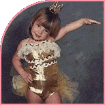
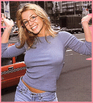
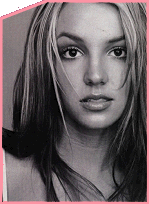

Everyone dreams of
being a prince or a princess, being rich and famous, or living in a world just like those
ones in the fairy tales. But dreams rarely come true. Especially those for castles,
beatiful princesses and fame. Although it sounds strange to many people, here is
the story of a girl - beautiful, smart, talanted - who is already
the queen of teen-pop.
AT THE BEGINNING
She was just an ordinary girl. Born in Kentwood, Louisiana on the 2nd of December, 1981, Britney Jean Spears
was the second child to her parents. Little Britney was too active for a small child and
that was the reason for her parents to decide that she has to take dance lessons - to
release all the energy she had. So the future star performed in local dance reviews and
church choirs for several years. When Britney was 8, she auditioned for the Disney
Channel's "Mickey Mouse Club" series in Atlanta. But she was said to be too
young for the series. Britney was disappointed and did not know what to do.
THE CHANCE
Although she was too young for the series, one of the producers of "Mickey Mouse
Club" found Britney very talanted and decided to help her. He secured her an agent
from New York City and she worked there for almost three years. Little Britney studied at
the renowned Off-Broadway Dance Center and at the Professional Performing Arts
School. Also she took part in the Off-Broadway show "Ruthless," a comedy based
on the 1956 thriller "The Bad Seed." This was in 1991, Britney was just 10 and
she had to play the cute but evil child. Later in 1992 she appeared for
two times on the "Star Search" show - the first time as a winner and next time
as a looser. But this time Britney was not disappointed - she was stronger and knew that
there is still time to be an absolute winner. During next year Britney also took part in
several TV commercials. Everything seemed to be all right - she finally had what she had
been waiting for since she was a little kid. She was performing on stage - singing,
dancing and acting - and was living in New York City. But as every child - no matter how
much talanted or ambicious - Britney missed home. She missed her Dad, her school, her
friends. And her mother decided that it was time for them to go back home.
A DREAM COMES TRUE
But this was not the end of her career. In 1994 the producers of "Mickey Mouse
Club" called back and invited Britney to start performing. She was one of the
youngest members of the crew but it did not bother her. For two years she shared the stage
with Justin and JC (*NSync), Christina Aguilera and other children, learnt a lot about
performing and working hard. Although the success of the show it was stopped and Britney
had to go back home. Again.
BRITNEY GETS ITCHY
If such a child as Britney has to live a normal life it seems almost impossible. But she
tried hard not to think about performing career and focused on studies and normal teenage
life. Of course, it was crazy to even think for a moment that Britney could do it.
And she could not. Soon she got itchy and bored of this ordinary life. Her mother called
her ex-agent from New York City and he offered Britney to take part in the all-girl band
"Innocence". She was not flatterred to be part of such a group and turned down
the offer. Thed Britney recorded a demo-tape and her mother decided to send it to a
producer they met earlier in New Your City. The producer worked for "Jive
Records".
THE STORY REPEATS
No doubt Britney was talanted and deserved a solo career as a singer. She was sent
to Sweden to record her debut album. "Baby One More Time" was recorded
parallely in Sweden with Max Martin and in New Jersey with Foster White. Britney had
to learn a lot about singing and recording techniques but her curiosity and willingness
helped her to do the impossible. At that time European pop music was conquered by two
other teenage sensations - Billie and Robyn, but what the producers were looking for was a
world teenage pop sensation. Britney was told to be the one. It seemed that she had the
potential and desire to do it. No later than December 1998 "Baby One More Time"
- the single and the album hit the world charts. A miracle has happened.
THE 'BABY ONE MORE TIME' THING
No one has ever expected such a success. But no matter what, it happened Britney first
single and album named "Baby One More Time" hit #1 simultaneosly and this was to
happen for the first time in music history. The music video, directed by Nagel Dick won
several prestigious awards, including the award for Best Video on the European
Music Awards in 1999. Next single "Sometimes" just continued the successful path
of the album. "(You Drive Me) Crazy" was the leading single for the teenage
comedy "Drive Me Crazy" and made a huge success with the several different
versions of the video featuring the two main actors from the movie. Also Britney made the
"Time Out with Britney Spears" home video including backstage interview, making
of the first three videos, live performances and the full lenght videos for "Baby One
More Time", "Sometimes" and "(You Drive Me) Crazy". The next
thing to come was the new single. But Britney did it the way she love it - surprising once
again everyone. Actually there were two new singles - special release for Europe,
"Born to Make You Happy" and special release for the USA, "From the Bottom
of My Broken Heart". And, of course, two different single CDs, two different videos
and two different Britneys - the way the Europeans and the Americans like her. No matter
the fact that there were two singles, both of them hit #1 in the charts and proved once
again that Britney deserved all the attention she was paid to. Magazines, newspapers, TV
channels, sites on the Internet - everyone loved Britney! Numerous live appearances,
photoshoots, covers of prestigious magazines are already an ordinary part of Britney's
life. She performed over a hundred sold-out concerts in the USA and was ready the conquer
Europe and the rest of the world. Everyone believed that she could do it.
BRITNEY AND THE REST OF THE WORLD
It was not long until new Britneys appeared. Producers discovered Christina Aguilera,
Mandy Moore, Jessica Simpson and many other girls that are trying to sing, dance and look
like Britney. But miracles does not happen every day. Some of them sing well, others are
trying to dance and the rest just want to look good. Although the attacks of the newly
born teen stars, Britney continued to be the one and only princess of teen pop and teen
hearts. Rumours are the next "best" thing about being a star. Breast implants,
boyfriends, love affairs, her virginity, the too sexy look for a teenager, claims for not
willing to perform without lipsinging are just a part of the madness, created by people
who do not like Britney. In spite of all these gossips she stayed the same grounded girl
who thinks that rumours in showbiz are something normal. We still do not know many things
about Britney but we know enough to like her.
OOPS, BRITNEY DID IT AGAIN
In December 1999, just an year after the release of the "Baby One More Time"
album, was announced that Britney was already working on a second album.
April 2000 the new single was released and later in May - the new album. Both of them were
called "Oops... I Did It Again" and debuted as #1 in the world charts. Britney
is wiser and more confident and self-assured; also sexy, sassy and solidly in control. The
album beat the first-week-sales record for female artist with over a million copies of the
album sold. Also a book was published, named "Heart to Heart", about the
relationship between Britney and her mother Lynn. Britney definately did it again! Her two
next steps are the world tour and her new single named "Lucky". Looking forward
to hearing from her!
All HTML and layout
features are © Vicky's Britney Spears Site
All Rights Reserved.